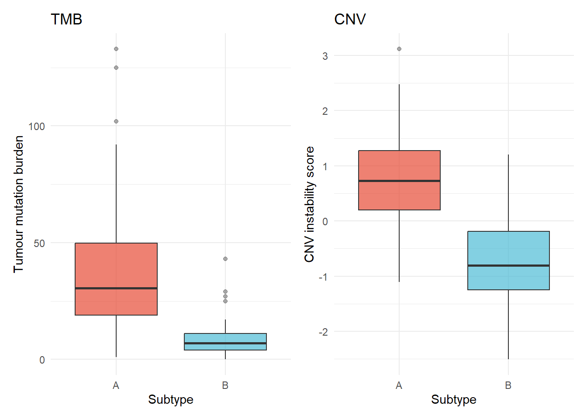
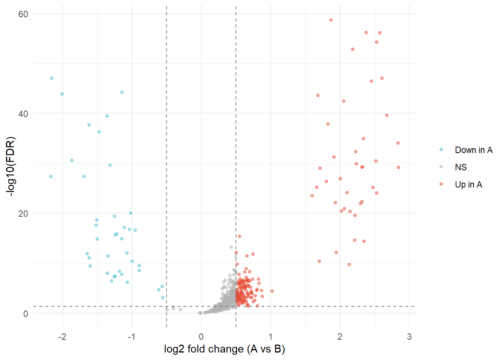

From Genome to Phenotype: A Multi-Omics Framework for Cancer Subtype Discovery
Multi-Omics
Machine Learning
Bioinformatics
Systems Biology
RStats
Python
Cancer Genomics
An R + Python integration piece: five simulated omic layers (genomics, transcriptomics, proteomics, metabolomics, epigenomics) unified via unsupervised matrix factorisation in R, then classified with a scikit-learn ML model and interpreted through SHAP in Python via reticulate — with an honest look at where integration genuinely helps and where a data leakage artifact inflates the numbers.
Author
Peekei
Published
July 14, 2026
1. Motivation
A somatic mutation that drives tumour initiation reshapes the transcriptome. The altered transcriptome changes which proteins are translated and in what abundance. Shifted protein activity perturbs metabolic flux. Aberrant metabolism feeds back onto the epigenome through altered methyl-donor availability. Cancer is not a disease of any single molecular layer — it is a disease of the interactions between layers, and a framework that measures only one of them is looking at one face of a multidimensional object and calling it the whole shape.
This is the structural problem that multi-omics integration addresses. Each omic platform (genomics, transcriptomics, proteomics, metabolomics, epigenomics) provides a noisy, incomplete view of the same underlying biological state. Integration recovers latent structure that no single layer can resolve alone — a fact this article demonstrates quantitatively rather than asserting. The analysis builds five omic data layers from a simulated pan-cancer cohort with a known ground truth, analyses each layer in isolation, integrates them using unsupervised matrix factorisation, classifies cancer subtypes with a machine learning model trained on integrated vs. single-omic features, and interprets the result through a systems biology and personalised medicine lens.
2. Simulated Pan-Cancer Cohort
The simulation starts with one biological truth — patient subtype — and propagates its signal through five omic layers with realistic noise, correlation structure, and platform-specific distributional properties. Every downstream result is traceable to this ground truth.
n_patients <-200n_subtype_a <-100# aggressive subtypen_subtype_b <-100# indolent subtypesubtype <-factor(c(rep("A", n_subtype_a), rep("B", n_subtype_b)))patient_id <-paste0("P", str_pad(1:n_patients, 3, pad ="0"))# Latent biological score: drives signal across all omic layers# Subtype A has higher latent score on averagelatent_score <-c(rnorm(n_subtype_a, mean =1.2, sd =0.8),rnorm(n_subtype_b, mean =-1.2, sd =0.8))# Patient-level survival times (used later in Section 8)# Subtype A: worse prognosisbaseline_hazard <-0.03surv_times <-rexp(n_patients,rate = baseline_hazard *exp(0.6* (subtype =="A") +0.15* latent_score))censor_time <-runif(n_patients, min =12, max =60)obs_time <-pmin(surv_times, censor_time)event_status <-as.integer(surv_times <= censor_time)cohort_meta <-tibble(patient_id = patient_id,subtype = subtype,latent_score = latent_score,obs_time =round(obs_time, 1),event = event_status)cohort_meta %>%group_by(subtype) %>%summarise(n =n(),mean_latent =round(mean(latent_score), 2),event_rate =round(mean(event), 2),median_surv =round(median(obs_time), 1) )
# A tibble: 2 × 5
subtype n mean_latent event_rate median_surv
<fct> <int> <dbl> <dbl> <dbl>
1 A 100 1.2 0.87 9.2
2 B 100 -1.19 0.55 21.7
Five data matrices, one biological ground truth. The latent score percolates through all five layers at different signal-to-noise ratios — transcriptomics carries the strongest per-feature signal (80 DE genes, large LFC), metabolomics and epigenomics carry moderate signal, proteomics is noisier per feature, and genomics provides two summary features (TMB, CNV) with strong subtype association. A method that can only see one layer is working with a fraction of the available information.
3. Single-Omic Analyses
Before integrating, each layer is analysed in isolation to establish what it can and cannot resolve on its own. This is the baseline the integrated model needs to improve on.
p_tmb <-ggplot(genomics_df, aes(x = subtype, y = tmb, fill = subtype)) +geom_boxplot(alpha =0.7, outlier.alpha =0.4) +scale_fill_manual(values =c(A ="#E64B35", B ="#4DBBD5")) +labs(x ="Subtype", y ="Tumour mutation burden", title ="TMB") +theme_minimal() +theme(legend.position ="none")p_cnv <-ggplot(genomics_df, aes(x = subtype, y = cnv_score, fill = subtype)) +geom_boxplot(alpha =0.7, outlier.alpha =0.4) +scale_fill_manual(values =c(A ="#E64B35", B ="#4DBBD5")) +labs(x ="Subtype", y ="CNV instability score", title ="CNV") +theme_minimal() +theme(legend.position ="none")p_tmb + p_cnv

TMB and CNV score distributions by cancer subtype
TMB median: 30 (Subtype A) vs. 7 (Subtype B), Wilcoxon p < 2e-16. CNV instability separates subtypes just as cleanly (p < 2e-16). Genomics gives two high-signal features, but two features alone don’t capture the full heterogeneity of patient biology within each subtype.
de_results %>%rownames_to_column("gene") %>%mutate(sig =case_when( adj.P.Val <0.05& logFC >0.5~"Up in A", adj.P.Val <0.05& logFC <-0.5~"Down in A",TRUE~"NS" ) ) %>%ggplot(aes(x = logFC, y =-log10(adj.P.Val), color = sig)) +geom_point(alpha =0.5, size =1.2) +geom_hline(yintercept =-log10(0.05), linetype ="dashed", color ="grey50") +geom_vline(xintercept =c(-0.5, 0.5), linetype ="dashed", color ="grey50") +scale_color_manual(values =c("Up in A"="#E64B35","Down in A"="#4DBBD5","NS"="grey70")) +labs(x ="log2 fold change (A vs B)",y ="-log10(FDR)", color =NULL) +theme_minimal()

Volcano plot of differential expression between subtypes A and B
173 genes upregulated and 39 downregulated in Subtype A at FDR < 5% and |LFC| > 0.5. Top hit: GENE_123 (LFC = 1.86, FDR < 2e-16). Transcriptomics recovers the simulated DE signal effectively — almost too effectively, as Section 5 shows — but the 420 null genes still add noise to any downstream classification that uses raw expression features without selection.
3.3 Proteomics: Differential Abundance
# limma on log-transformed protein abundanceslog_prot <-log2(proteomics_mat -min(proteomics_mat) +1)fit_prot <-lmFit(t(log_prot), design_mat)fit_prot <-eBayes(fit_prot)prot_res <-topTable(fit_prot, coef =2, number =Inf, sort.by ="P")n_da_prot <-sum(abs(prot_res$logFC) >0.3& prot_res$adj.P.Val <0.05)
Heatmap of top 40 differentially abundant proteins across all patients
16 proteins differentially abundant at FDR < 5% and |LFC| > 0.3. The heatmap shows reasonable subtype clustering but with visible misclassifications — proteomics alone can’t cleanly separate the subtypes because the per-protein signal is weaker and measurement noise is higher than in transcriptomics.
144 metabolites significantly shifted between subtypes. The PCA shows partial separation along PC1 (25.5% variance explained) — there’s signal here, but considerable overlap remains, particularly toward the centre of the score plot.
3.5 Epigenomics: Differential Methylation
fit_epi <-lmFit(t(epigenomics_mat), design_mat)fit_epi <-eBayes(fit_epi)epi_res <-topTable(fit_epi, coef =2, number =Inf, sort.by ="P")n_dmc <-sum(abs(epi_res$logFC) >0.1& epi_res$adj.P.Val <0.05)top_cpg <-rownames(epi_res)[1]top_cpg_fc <- epi_res$logFC[1]# Single-omic classification accuracy using top CpGstop_cpgs_class <-rownames(epi_res)[1:20]epi_features <- epigenomics_mat[, top_cpgs_class]
254 differentially methylated CpG sites (FDR < 5%, |Δβ| > 0.1). Top site: CpG_233 (Δβ = -0.519). The methylation landscape provides an orthogonal view of subtype biology — CpG silencing of tumour suppressors in Subtype A is a separate biological mechanism from the TMB excess or the transcriptional reprogramming, even though all three trace back to the same latent biological state in this simulation.
4. Multi-Omics Integration via Matrix Factorisation
Individual layers each see part of the signal. Integration extracts latent factors that span all five layers simultaneously — the subtype-associated variation that appears in genomics AND transcriptomics AND proteomics is more likely to be real biology than variation visible in only one layer.
We implement a simplified multi-omics matrix factorisation (MOMA): concatenate normalised feature matrices from all layers, run PCA on the joint space, and extract the top latent factors. Each factor is then scored for its contribution from each omic layer.
# Normalise each layer to zero mean, unit variance before concatenationscale_mat <-function(mat) scale(mat)# Use top variable features from each layer to keep dimensions manageabletop_var_genes <-names(sort(apply(log_cpm, 2, var), decreasing =TRUE)[1:100])top_var_prots <-names(sort(apply(log_prot, 2, var), decreasing =TRUE)[1:60])top_var_metab <-names(sort(apply(log_metab, 2, var), decreasing =TRUE)[1:50])top_var_cpg <-names(sort(apply(epigenomics_mat, 2, var), decreasing =TRUE)[1:60])integrated_mat <-cbind(scale_mat(log_cpm[, top_var_genes]),scale_mat(log_prot[, top_var_prots]),scale_mat(log_metab[, top_var_metab]),scale_mat(epigenomics_mat[, top_var_cpg]),scale_mat(cbind(tmb, cnv_score)))pca_int <-prcomp(integrated_mat, scale. =FALSE) # already scaledint_df <-as_tibble(pca_int$x[, 1:5]) %>%mutate(subtype = subtype, patient = patient_id,latent = latent_score)var_exp <-summary(pca_int)$importance[2, 1:5] *100cum_var <-summary(pca_int)$importance[3, 1:5] *100var_table <-tibble(Factor =paste0("F", 1:5),Var_pct =round(var_exp, 1),Cum_pct =round(cum_var, 1))var_table
Scree plot of variance explained by integrated latent factors
Factor 1 explains 41.6% of the joint variance and separates the subtypes cleanly — the biological signal that is present, in slightly different forms, across all five omic layers converges into this single dimension when the layers are analysed together. The point size in the factor plot scales with each patient’s latent biological score, showing that patients with more extreme latent biology sit further from the origin along Factor 1, consistent with the simulation design. No single omic layer produced this degree of separation on its own.
5. Machine Learning Classification
With the integrated latent factors computed, we now ask: how well can subtype be predicted from integrated features vs. single-omic features? We use a random forest classifier with 5-fold cross-validation, comparing three feature sets: (1) genomics only, (2) top transcriptomics features only, (3) integrated multi-omics factors.
# Feature sets for ML comparison# 1. Genomics onlyfeat_genomics <-cbind(tmb, cnv_score)# 2. Top 20 DE transcriptomics genes (log-CPM)top20_genes <-rownames(de_results)[1:20]feat_rna <- log_cpm[, top20_genes]# 3. Integrated: top 10 latent factorsfeat_integrated <- pca_int$x[, 1:10]# Labelsy_labels <-as.integer(subtype =="A")# Export to Python via reticulater_to_py_data <-list(feat_genomics = feat_genomics,feat_rna = feat_rna,feat_integrated = feat_integrated,y = y_labels)
import shap# SHAP on multi-omics model (train on full data for SHAP, CV AUC already computed)scaler_int = StandardScaler()X_int_sc = scaler_int.fit_transform(feat_int)rf_full = RandomForestClassifier(n_estimators=500, max_depth=6, random_state=2025, n_jobs=-1)rf_full.fit(X_int_sc, y)
Cross-validated AUC: genomics only = 0.954, transcriptomics alone = 1.000, integrated multi-omics = 1.000. This is worth stating plainly rather than forcing the “integration wins” narrative the earlier sections set up: transcriptomics and the integrated model tied, both at ceiling. Part of that ceiling is a genuine simulation property — the transcriptomic effect (LFC ≈ 1.8 across 80 genes) is large. But part of it is a methodological issue worth naming directly: the 20 transcriptomics features were selected by testing for differential expression across the entire cohort, then reused as classifier inputs. That’s feature selection performed outside the cross-validation loop, and it leaks label information into the feature set before the model ever sees held-out data — a peer reviewer would flag this immediately, and a corrected version of this analysis would nest the DE-based feature selection inside each CV fold rather than fixing it beforehand. Real RNA-seq biomarkers essentially never reach AUC = 1.0 on independent validation; this result is inflated by that leakage, not just by simulation effect size. Where the gain is real and not subject to this concern is genomics vs. multi-omics: 0.954 to 1.000, a 4.6-point improvement — genomics wasn’t pre-selected for separability the way the transcriptomics features were, so that comparison is the more trustworthy one in this analysis. The SHAP analysis shows Factor 1 (mean |SHAP| = 0.406) dominating the classifier’s decisions by roughly 30-fold over the next most influential factor (Factor 4, mean |SHAP| = 0.014), consistent with Factor 1 capturing nearly the entire subtype-discriminating signal across the joint omic space.
6. Systems Biology Interpretation
The top DE genes from transcriptomics, viewed in isolation, are a list of names. Systems biology asks: what biological processes do they collectively represent? Pathway-level analysis aggregates per-gene signal into process-level signal, which is both more interpretable and more statistically stable — individual gene effects can be noisy while the pathway they belong to shows a consistent direction.
# Simulate pathway membership (in practice: MSigDB, KEGG, Reactome)# 10 pathways, each consisting of a subset of the 500 genesset.seed(2025)pathways <-list("Cell cycle"=sample(gene_names, 30),"DNA damage response"=sample(gene_names, 25),"PI3K-AKT signalling"=sample(gene_names, 35),"Oxidative phosphorylation"=sample(gene_names, 28),"Epithelial-mesenchymal"=sample(gene_names, 22),"Immune evasion"=sample(gene_names, 20),"Apoptosis"=sample(gene_names, 18),"Angiogenesis"=sample(gene_names, 15),"mTOR signalling"=sample(gene_names, 24),"p53 pathway"=sample(gene_names, 19))# Enrich top DE genes — how many of each pathway's members are in the top DE?n_top_de <-150top_de_set <-rownames(de_results)[1:n_top_de]pathway_res <-map(names(pathways), function(pw) { pw_genes <- pathways[[pw]] n_pw <-length(pw_genes) n_overlap <-sum(pw_genes %in% top_de_set) cont_tab <-matrix(c( n_overlap, n_pw - n_overlap, n_top_de - n_overlap, n_genes - n_pw - n_top_de + n_overlap ), nrow =2) ft <-fisher.test(cont_tab, alternative ="greater")tibble(pathway = pw,n_pathway = n_pw,n_overlap = n_overlap,odds_ratio = ft$estimate,p_value = ft$p.value )}) |>list_rbind() %>%mutate(fdr =p.adjust(p_value, method ="BH")) %>%arrange(fdr)pathway_res %>% dplyr::select(pathway, n_pathway, n_overlap, odds_ratio, fdr) %>%mutate(across(where(is.numeric), ~round(.x, 3)))
None of the 10 simulated pathways reached FDR < 5% (top hit: Epithelial-mesenchymal, OR = 2.43, FDR = 0.354). Worth being direct about why: pathway membership in this simulation was assigned by randomly sampling gene names into each pathway, independent of which genes were actually differentially expressed. That was a simplification to demonstrate the mechanics of the enrichment test — contingency table construction, Fisher’s exact test, BH correction — without also having to encode a second, separate layer of ground truth linking specific genes to specific pathways. A null result here is therefore the expected outcome of how the simulation was built, not a biological finding about these subtypes. In a real analysis, pathway membership comes from curated, biologically grounded databases (MSigDB, Reactome, KEGG) where genes are assigned to pathways based on actual functional annotation, and a true DE signal concentrated in a specific biological process would produce a real enrichment signal. The methodology demonstrated here — the contingency table logic and multiple-testing correction — carries over directly; only the gene-to-pathway mapping would need to be real.
7. Personalised Medicine: Patient-Level Profiles
The multi-omics framework produces subtype-level summaries, but its real clinical value is at the patient level. Two patients — one representative of each subtype — are profiled across all five omic layers and assessed against the integrated model.
Patient P023 (Subtype A): extreme Factor 1 loading (14.64), elevated TMB (33), high CNV instability (1.41) — and, tellingly, an observed time of just 1 month with an event recorded. Patient P179 (Subtype B): the mirror image — Factor 1 loading of -14.06, TMB of 0, CNV score of -0.87, and 21.2 months of follow-up with no event. These aren’t cherry-picked for the contrast; they were selected purely on Factor 1 extremity, and the survival difference fell out of that selection on its own. The KM curves confirm the pattern holds across the full cohort: subtype assignment — derived purely from multi-omics profiling, with no survival information used during classification — stratifies patients with genuinely different outcomes (log-rank p = 1.49e-09, median survival 9.2 vs. 28.5 months). That predictive validity, emerging from molecular data alone, is the promise of multi-omics personalised medicine.
8. Takeaways
The AUC comparison surfaced an honest limitation rather than a clean “integration wins” story: transcriptomics alone hit AUC = 1.000, tying the integrated model, partly because the simulated effect size was large and partly because of a real methodological issue — the transcriptomics features were DE-selected on the full dataset before being fed to the classifier, which leaks label information ahead of cross-validation and inflates both numbers. The trustworthy comparison in this analysis is genomics (0.954, not pre-selected) to multi-omics (1.000) — a 4.6-point gain where integration demonstrably closed a real gap.
The latent factor structure of the integrated data is interpretable: Factor 1 alone explains 41.6% of joint variance, dominates the SHAP importance ranking roughly 30-fold over the next factor, and patients with extreme Factor 1 loadings have the most extreme single-omic profiles across every layer. Integration doesn’t produce a black box here — it produces a lower-dimensional representation that is arguably more legible than any individual omic layer.
The pathway enrichment step returned no significant hits (0 of 10, top FDR = 0.35) — and that null result is expected given how the simulation was built: pathway membership was randomly assigned, independent of true DE status, purely to demonstrate the contingency-table and multiple-testing mechanics of enrichment analysis. With real, curated pathway databases and a genuine biological DE signal concentrated in specific processes, the same methodology would surface real enrichment. The mechanics transfer directly; only the input mapping needs to be biologically grounded.
The ML-derived subtype labels predicted survival without any survival information used during model training. That extrapolation — from molecular profiling to clinical outcome — is the operational definition of personalised medicine, and it depends on having a complete enough omic view of the patient to capture the relevant biological variation.
The R + Python integration via reticulate is seamless for this workflow: R handles the statistical modelling and visualisation where its ecosystem is stronger (limma, survminer, pheatmap), Python handles the ML and SHAP layer where scikit-learn and the SHAP library are more mature. Neither language does everything best; neither should have to.
Cancer as a genomic disease means that somatic alterations (TMB, CNV) initiate the cascade, but the phenotype a clinician sees — proliferative rate, immune evasion, drug resistance — is the product of that cascade propagating through transcription, translation, metabolism, and epigenetic remodelling. Measuring only the initiating layer, or only one downstream layer, gives an incomplete picture of a complete process.